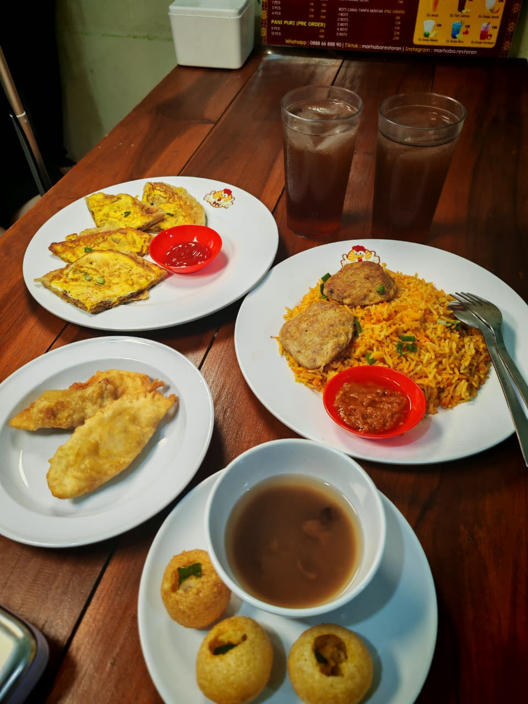
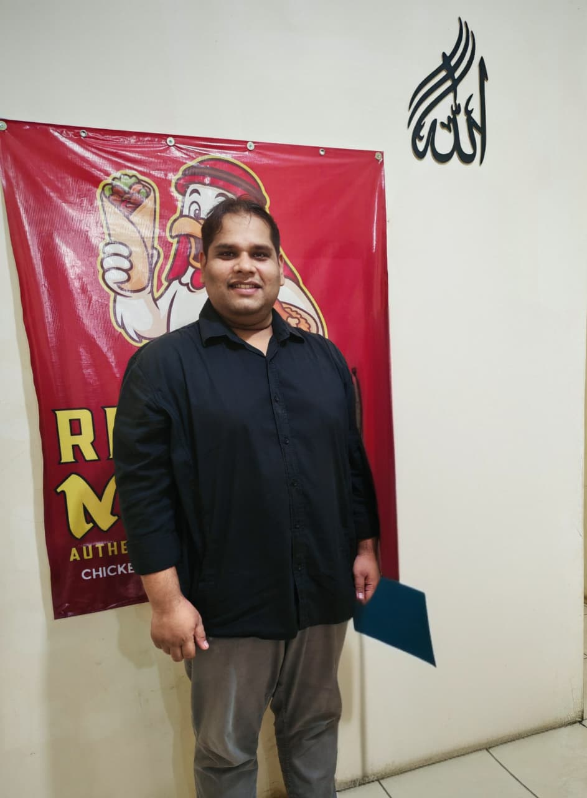

Paket Spesial Ramadhan


Bulan Ramadhan adalah waktu untuk kita membersihkan hati, memperkuat spiritualitas, dan juga memberi kesempatan tubuh untuk beristirahat melalui pola puasa yang teratur. Jika dijalani dengan tepat, puasa dapat membantu:
Kunci utamanya sederhana: pilih menu berbuka yang bergizi, seimbang, dan tidak berlebihan. Di sinilah peran makanan yang berkualitas menjadi suatu hal yang penting.


Marhaba Restaurant Yogyakarta berdiri sejak 2025 dengan visi menghadirkan kuliner Pakistan dan Timur Tengah yang autentik, halal, dan penuh kehangatan. Didirikan oleh Raja Zeeshan Munawar, Marhaba bukan sekadar tempat makan. Ini adalah ruang untuk berkumpul. Tempat keluarga dan sahabat berbagi cerita, terutama di momen spesial seperti Ramadhan.
"Makanan adalah identitas, warisan, dan cara untuk menyampaikan untuk kasih sayang."
Setiap hidangan disiapkan dengan:
Pendekatan ini bukan hanya soal rasa. Ini soal kualitas dan kenyamanan setelah makan.
Agar ibadah tetap maksimal dan tubuh tetap bugar selama bulan suci.
Mulailah dengan minuman hangat atau manis alami (seperti kurma) untuk menenangkan lambung setelah seharian berpuasa.
Hindari langsung makan besar dalam satu waktu. Berikan jeda agar sistem pencernaan tidak kaget dan mencegah kantuk berlebih.
Pilih menu kaya protein dan rempah alami, seperti Nasi Biryani Marhaba yang membantu metabolisme dan energi tubuh.
Minum air putih secara berkala antara waktu berbuka hingga sahur untuk menjaga hidrasi kulit dan konsentrasi.